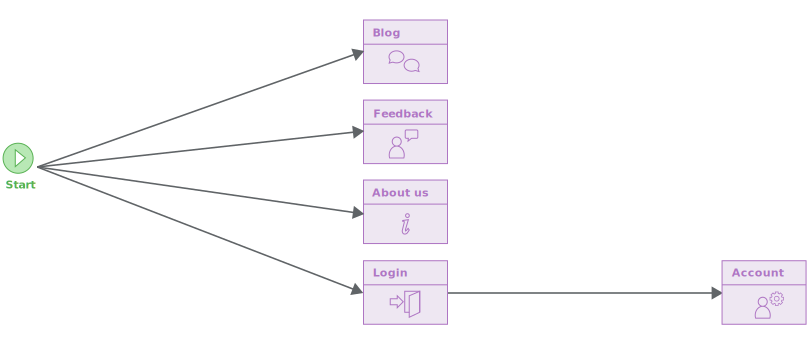
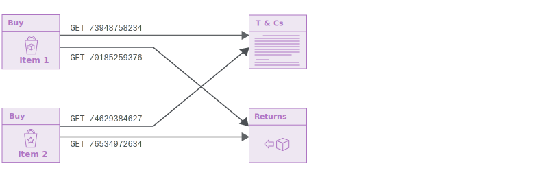
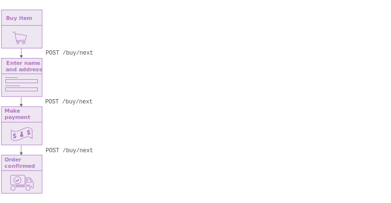
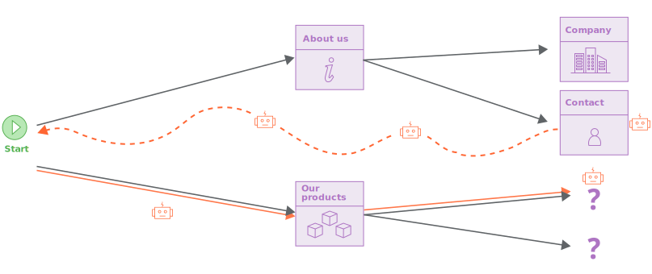
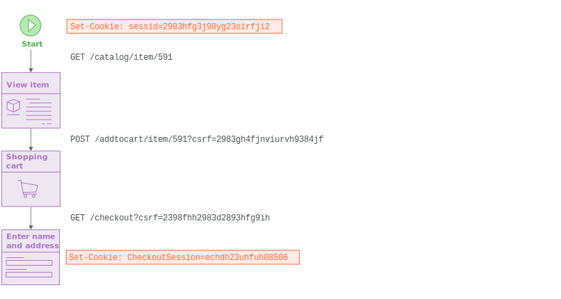
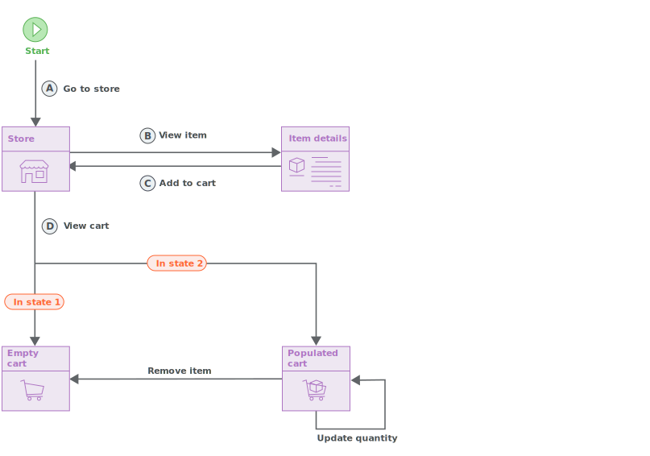
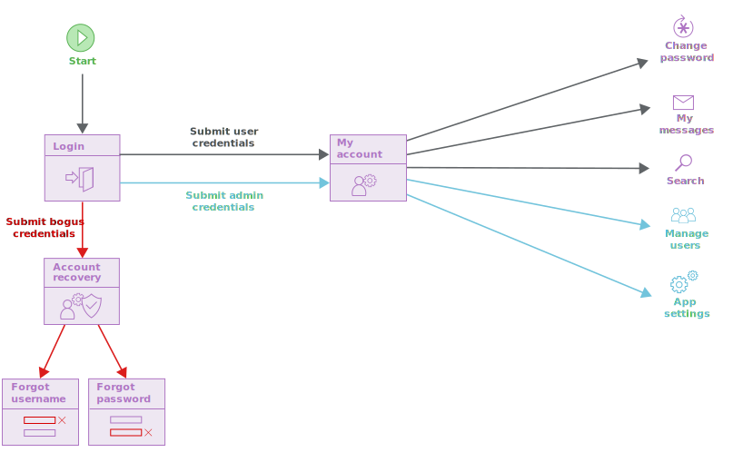
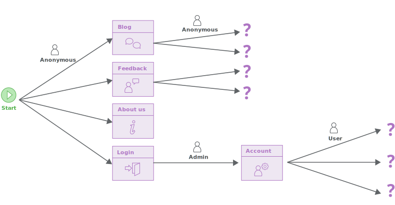
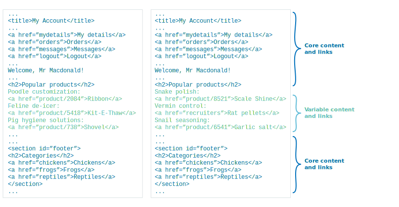
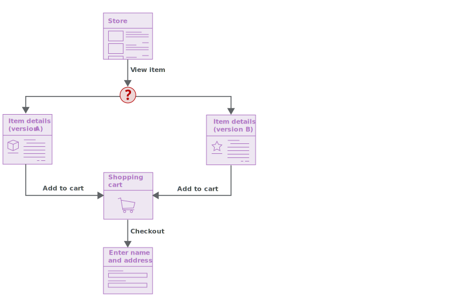

クロール
スキャンのクロール段階では、アプリケーションを巡回し、リンクをたどり、フォームを送信し、必要な場合はログインし、アプリケーションのコンテンツとナビゲーション経路を列挙します。この一見単純な作業、Burpのクローラがアクセスできる様々な課題点を提示し、アプリケーションの正確マップを作成します。
主な手法
Burpのクローラは、ユーザがブラウザで行うように、リンクをクリックし入力を送信して、アプリケーションの巡回を行います。アプリケーションのコンテンツや機能について、アプリケーションの異なる場所とそれらの間のリンクを表す、有向グラフ形式のマッピングを構築します。
クローラは、アプリケーションが使用するURL構造は考慮しません。場所は、到達したアイテムのURLではなく、コンテンツに基づいて(そして後で再識別される)識別されます。これによりクローラは、一時的なデータをURLに付与する、CSRFトークンやキャッシュバスターなどの最新のアプリケーションを確実に処理できます。毎回各リンクのURL全体が変更されても、クローラは正確なマップを作成します。
アプリケーションの状態やユーザの操作に基づき、異なる場所に同じURLを使用するアプリケーションでも、クローラが処理できます。
クローラが巡回して対象アプリケーションを網羅すると、まだ完了していないグラフの先端を追跡します。これらは、アプリケーションで観察されたがまだ訪問していないリンク(または他のナビゲーション遷移)のリンクを表しています。しかしクローラは、保留中のリンクに"ジャンプ"したり、コンテキストを外れてアクセスはしません。代わりに、現在の場所から直接ナビゲートするか、開始場所に戻ってからナビゲートします。通常のユーザのアクションに、ブラウザを可能な限り近づけようとします。
URL構造について考慮しない手法のクロールは、最近のWebアプリケーションを扱う際に非常に効果的ですが、"多すぎる"コンテンツにアクセスしてしまう可能性があります。最近のウェブサイトにはよく、(ページフッターやバーガーメニューなど経由)で大量の余分なナビゲーション経路があり、つまり全てが直接他の全てにリンクされています。この問題に対処するためにBurpのクローラは、さまざまな手法を採用しています: 既にアクセスした場所へのリンクのフィンガープリントを作成して、重複アクセスを防ぎます; 新しいコンテンツの発見を優先させるよう幅を優先してクロールします; クロール範囲を制限し中断する設定ができます。これらの対処は、カレンダーのような"無限の"アプリケーションを正しく処理するためにも役立ちます。
セッションハンドリング
Burpのクローラは、ユーザがブラウザを使用した場合と同じ方法でターゲットアプリケーションを巡回し、ブラウザが処理できるほぼすべてのセッションハンドリングメカニズムで自動的に動作できます。マクロを記録したり、セッションの取得方法や現在のセッションが有効か確認するセッションハンドリングルールを設定する必要はありません。
クローラは、複数のクローラ"エージェント"を使用して作業を並列化します。各エージェントは、それぞれのブラウザでアプリケーションを巡回する、別々のユーザになります。各エージェントは独自のcookie jarを持ち、アプリケーションがcookieを発行すると更新されます。エージェントが開始位置に戻ってそこからクロールを開始する場合、cookie jarはクリアされ、完全に新しいブラウザーセッションをシミュレートします。
クローラが移動する際のリクエストは、先行するレスポンスに基づいて動的に生成されるため、URLまたはフォームフィールドのCSRFトークンは自動的に処理されます。よってクローラは、複雑なセッションハンドリングを使用する機能を正しくナビゲートでき、ユーザによる設定は不要です:
アプリケーション状態の変化の検出
最近のWebアプリケーションは非常にステートフルで、ユーザが実行したアクションの結果によって、同じアプリケーション機能が別のタイミングでは異なるコンテンツを返すのが一般的です。Burpのクローラは、クロール中に実行した操作に起因する、アプリケーション状態の変化を検出できます。
次の例で、パスBCを移動すると、アプリケーションは状態1から状態2に遷移します。リンクDは、状態1と状態2では論理的に異なる位置になります。したがって、パスADは空のカートに移動し、ABCDは入っている状態のカートに移動します。リンクDが不確定であるとするのではなく、リンクDが依存する状態変化の経路をクローラが認識できるということです。クローラは以後、入っているカートの場所に確実に到達し、そこから入手可能な他の機能にアクセスができます。
アプリケーションログイン
Burpのクローラは、認証情報が送信されていない、未認証フェーズから始まります。これが完了すると、Burpはアプリケーション内でログインと自己登録機能を検出します。
アプリケーションが自己登録をサポートしている場合、Burpはユーザの登録を試みます。1つ以上の既存のログインを使用するよう、クローラの設定もできます。
その後、クローラは認証フェーズに進みます。何度かログイン機能にアクセスして、次を送信します:
- 自己登録アカウントの資格情報 (あれば)
- 設定された既存アカウントの資格情報
- 偽の資格情報 (これらはアカウントリカバリーなど興味深い機能に到達するかもしれません)
ログインに送信された各資格情報のセットごとに、Burpはログインの後に発見されたコンテンツをクロールします。これによりクローラは、さまざまなタイプのユーザが使用できる、さまざまな機能を取得できます。
クローラは通常、複数のクローラエージェントを並行して使用しますが、一部のアプリケーションでは、同じユーザによる同時ログインが禁止されています。ユーザがログインするこの状況では、同じユーザによって認証された既存のセッションはすべて終了します。Burpはこの挙動を検出でき、以後は個別のユーザアカウントごとに1つの同時ログインのみを実行します。
揮発性コンテンツのクロール
最近のWebアプリケーションにはよく揮発性コンテンツがあり、同じ場所や機能でも、ユーザの行動に起因せず、異なるタイミングで実質的に異なるレスポンスを返します。ソーシャルメディアチャネルのフィードや、ユーザのコメント、インライン広告、または本当にランダムなコンテンツ(今日のメッセージ、A/Bテストなど)などの要因によって、この挙動が発生する可能性があります。
Burpのクローラは、揮発性のコンテンツの多くの事例を識別し、異なるアクセスで異なるレスポンスであるにも関わらず、同じ場所を正しく再識別できます。これにより、一連のアプリケーションレスポンス内の"コア"要素に注目でき、これは興味深いアプリケーションのコンテンツと機能への主要なナビゲーション経路を発見する上で最も重要である可能性があります。
場合によって、異なるタイミングで特定のリンクを訪問すると、"同じ"とみなすにはあまりにも異なるレスポンスが返ってくる場合があります。この状況では、Burpのクローラは2つの異なる場所としてレスポンスの両方のバージョンを取得し、グラフ内の不確定エッジとしてプロットします。アプリケーション全体の不確定な範囲がそれほど大きくない場合、Burpは関連するコンテンツをクロールでき、不確定リンクの背後にあるコンテンツへの道を確実に見つけられます:
